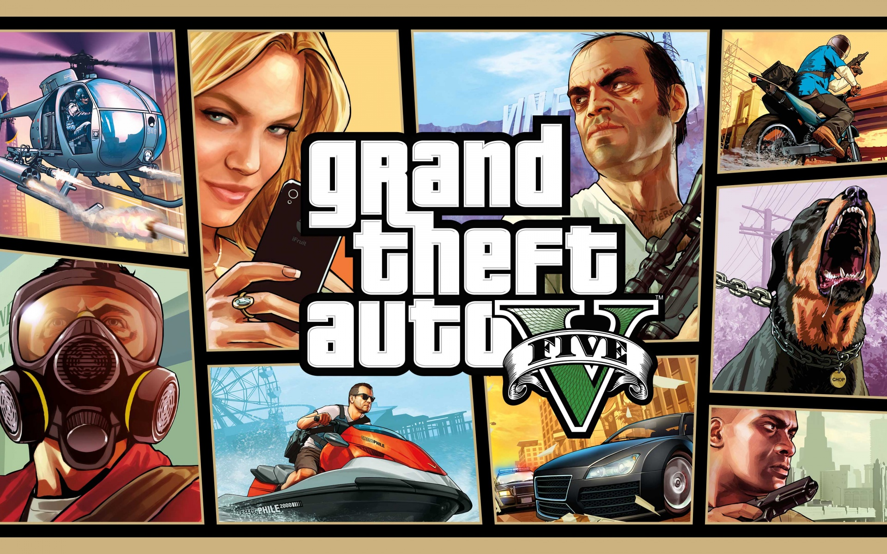
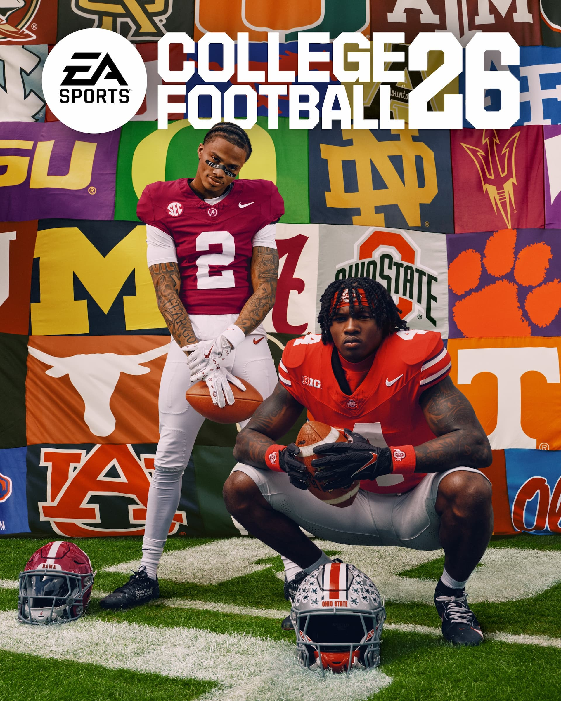

NBA 2K

Grand Theft Auto

Madden NFL

College Football
NBA 2K
NBA 2K is a basketball video game series that allows
players to experience the excitement of professional
basketball. Players can choose their favorite NBA teams,
compete against other teams, and create their own
basketball players. The game features realistic
basketball gameplay, player customization, and different
game modes.
Grand Theft Auto
Grand Theft Auto, also known as GTA, is an open-world
action-adventure video game series. Players can explore
large cities, drive different vehicles, complete missions,
and experience different stories. One of the most
recognizable features of the series is its open-world
environment, which gives players freedom to explore
and discover different activities.
Roblox
Roblox is an online gaming platform where players can
explore thousands of experiences created by other users.
Players can enjoy different types of games, including
obstacle courses, role-playing games, racing games, and
simulations. Roblox also allows users to customize
their avatars and create their own experiences.
Madden NFL
Madden NFL is a football video game series based on the
National Football League. Players can choose their favorite
NFL teams and compete in football games against the computer
or other players.
Madden includes several game modes, such as Franchise Mode
and Ultimate Team. Players can manage teams, make decisions
about their rosters, and compete throughout a football
season. The game is popular with fans who enjoy football
and sports video games.
NCAA College Football
College Football is a sports video game series that focuses
on college football. Players can choose from different
college teams and compete against schools from across
the country.
One of the interesting features is Dynasty Mode, where
players can take control of a college football program
and work toward building a successful team. The game
includes college stadiums, team traditions, and exciting
matchups that recreate the atmosphere of college football.